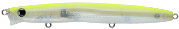
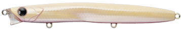
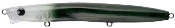
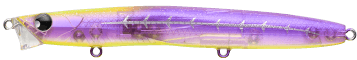

レクター111F
（RECTER111F）
レクター111F（RECTER111F）はPOP SEA CREW（ポップシークルー）のリップレスフローティングミノーです。
極浅レンジ設定で、どんなシャローも攻略。主なターゲットはシーバスです。
細身のリップレスフローティングミノーでありながら、スローピッチのゆらぎアクションを生み出すRECTER111F。スピードの遅いベイトを食べているシーバスに効果的です。

画像出典:POP SEA CREW公式HP
スペック
- メーカー
- POP SEA CREW（ポップシークルー）
- タイプ
- フローティング（リップレス）
- 全長
- 111mm
- 重量
- 10.5g
- フック
- #8
- リング
- #2
- アクション
- スローピッチゆらぎ
- レンジ
- 0〜10cm
- 価格
- 1,980円（税込）
▼今すぐチェック

レクター111Fの特徴
超スローピッチのゆらぎアクションで、浮遊系のベイトを狙うシーバスに
-
超スローピッチゆらぎアクション
波にもまれながらゆらぐ弱ったベイトを演出できる。水面に浮き切らないベイトを食べているシーバスにも効く。
-
水面直下〜10cmの絶妙なレンジ
巻くスピード次第で、引き波を立てて引いたり、わずかに潜らせて流したりできる。極めて浅いポイントでも使える。
-
ショートリップのようなヘッド形状
水の抵抗をつかみやすい、ショートリップを搭載したようなヘッド形状。
レクター111Fの使い方
基本はスローのただ巻きです。少し速めに巻けば水面に引き波を立てて、ゆっくり巻けばわずかに潜らせて流せます。
流れのある場所では、流れに乗せてドリフトさせ、波にもまれてゆらぐ弱ったベイトのように見せましょう。
レクター111Fの得意な状況
バチ抜けのシーズンはもちろん、ハクやイナッコ、イワシ、サッパ、サヨリなど、水面付近にいるベイトを狙っているシーバスならオールシーズン使えます。
極浅レンジなので、浅い干潟や河川のシャローも得意です。
ワンポイント
まず1本選ぶなら、このRECTER111Fがシリーズの基本サイズ。小さめのベイトには71F、大きめのベイトや流す釣りには131F BOLDと使い分けられます。
RECTERシリーズのサイズの使い分け
| モデル | 全長・重さ | レンジ・特徴 |
|---|---|---|
| RECTER71F | 71mm・6.4g | 0〜10cm。小さめのベイトや軽めのタックルに |
| RECTER111F（この記事） | 111mm・10.5g | 0〜10cm。バチ抜けからオールシーズン使える基本サイズ |
| RECTER131F BOLD | 131mm・25g | 0〜20cm。大きめのベイトやアップクロスからのドリフトに |
※数値は公式ページより。
オススメカラー
レクター111Fは全12色。そのうち4色を紹介します（画像は公式のカラーチャートより）。

#001 ハッピーレモンまず1つ選ぶならこの色。視認性の高いレモン系。

#002 カルボナーラクリーム系のパール。濁りでも見えやすい。

#004 ホワイトシェードクリアボディにダークな背中。シルエットを出しつつナチュラルに。

#011 KISARAGIパープル系の透け感のあるカラー。追加された新色。
画像出典:POP SEA CREW公式HP
レクター111Fに似ているルアー
-
 レクター71F
ポップシークルー
詳細はこちら＞
レクター71F
ポップシークルー
詳細はこちら＞
同じシリーズの小型モデル。
-
 レクター131F BOLD
ポップシークルー
詳細はこちら＞
レクター131F BOLD
ポップシークルー
詳細はこちら＞
同じシリーズの大型モデル。
-
 モウラ105S
ポップシークルー
詳細はこちら＞
モウラ105S
ポップシークルー
詳細はこちら＞
同じポップシークルーのシンキングペンシル。